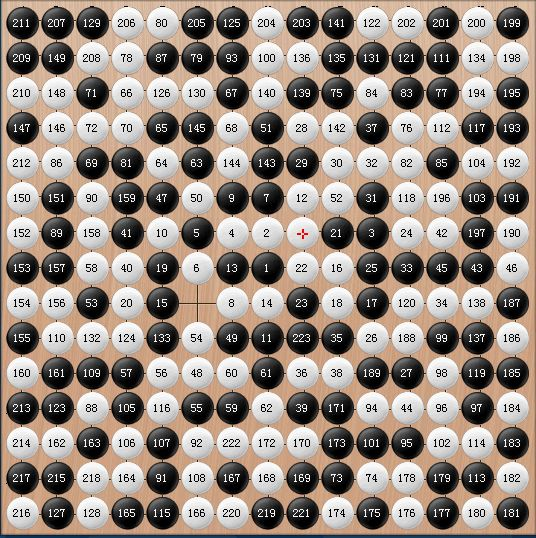

[学术讨论]RIF规则里为什么会有PASS权——再说串珠战术
#1 [学术讨论]RIF规则里为什么会有PASS权——再说串珠战术作者：岳麓小棋后 发表时间：2009-3-28 3:08:37
没什么新内容，介绍给新手听的，知道的权当路过，不知道的了解下串珠战术，一种在QQ五子棋游戏里理论可能实战却很少出现的白胜战术。
当然首先还是来看下现行RIF规则：
1、双方猜先，定出假先手（假黑方）。由假先手一方落下前3手，这3手必须是26种职业开局之一；
2、由此时的假白方决定是否交换，由此定出黑方与白方；
3、第5手黑方连落两子，在不考虑盘端的前提下，这两子与前4手不能存在任何种类的对称；
4、之后，常规条件下，双方轮流落子，按有禁手规则对弈；
5、双方都享有PASS权，即放弃自己落子，让对方连落两子的权利。如果在同一手内双方同时使用PASS权，棋局作和。
前面4条规则我们很熟悉，第5条有些人就会产生疑问了。围棋里有PASS权，五子棋里怎么也有PASS权？棋盘上随便落一个子都比PASS效果好呀，真是这样的吗，你再想想有没有PASS比落子好的情况。
这里的PASS权不只用来处理残局阶段棋盘空间上已无连五的可能的情况，还涉及到一个有趣的终盘白棋串珠胜。
什么是串珠战术呢？
串珠战术：五子棋的基本技巧之一。即持白方预先给黑棋留下一个禁点(显然只能为长连禁手)，当盘终时，由于交叉点是单数必为黑落子，而造成盘终黑棋因禁手无法落子使得白棋取胜的战术。此战术需要一定的耐心和超强的技术，因此在现实中几乎不可能出现，只是作为严谨规则之用。
串珠战术利用了长连禁手不能解除这个信息，后面白方只要逼平守和就可以取胜。
为了杜绝这种取胜手段，也为了体现棋类运动棋手有让子的权利，RIF规则第5条规定了PASS权。
QQ游戏里的五子棋是没有PASS权的，因而你也可以根据这个规则漏洞，偶尔惊艳下，毕竟串珠战术出现的概率是非常极其的低的，逮到机会，不妨慢慢长征一次，如果你不嫌烦的话。
［ 茗弈小刀 于 2009-3-29 11:38:26 时奖励此帖[金币加 20 威望加1］
［此帖子已被 茗弈小刀 在 2009-4-22 18:23:07 编辑过］
［此帖子已被 失落刀 在 2009-4-22 18:26:58 编辑过］
#2 Re:RIF规则里为什么会有PASS权——再说串珠战术作者：就是爱玩 发表时间：2009-3-28 7:02:54
支持小棋后！
能举一例说明吗？
#3 Re:RIF规则里为什么会有PASS权——再说串珠战术作者：小丸.net 发表时间：2009-3-28 10:22:27
无须举例，楼上的想一想，盘面上一共是15*15＝225个点，第一手是黑，如果下满225手，那么，最后一手也是黑，如果白预先在盘面上去刻意的留一个点（这个点是黑的长连禁点），然后一直死防，一直防到225手，那么，黑的最后一手一定是这个下贱白留的黑长连禁点。。。。所以，为了防止黑最后一手下在禁点上，黑可以选择PASS,这样黑少行棋一手，最后一手是白，如果这时白还想抓黑的话，也必须要选择PASS,但是规则规定，双方都选择PASS的话，是和棋。这是下贱白不愿意看到的，但这时因为白多下了一手棋，局面也许会有多的变化，更激烈的变化吧。#4 Re:RIF规则里为什么会有PASS权——再说串珠战术作者：安娜制作所 发表时间：2009-3-28 14:37:39
嗯,这个情况还真有,胜的人狂喜半天,输的人郁闷三天!
#5 Re:RIF规则里为什么会有PASS权——再说串珠战术作者：一期一会 发表时间：2009-3-28 17:25:35
是可以用，但觉得不怎么厚道~~听说过一个实战的故事，某君已经在读秒中……双方拍钟激战中，因为紧张和追求速度，在连续几次填子后一子悄然填到了禁点上
［ 茗弈小刀 于 2009-3-29 11:38:57 时奖励此帖[金币加 20 威望加1］
［本站用户 茗弈小刀 于 2009-3-29 11:39:27 花5个金币送您鲜花一朵］
#6 Re:RIF规则里为什么会有PASS权——再说串珠战术作者：就是爱玩 发表时间：2009-3-29 9:35:27

#7 Re:Re:RIF规则里为什么会有PASS权——再说串珠战术作者：岳麓小棋后 发表时间：2009-4-22 11:12:30

呵呵，昨天晚上整理QQ发现的，两位“强人”下出的，分享下
#8 Re:RIF规则里为什么会有PASS权——再说串珠战术作者：孤竹 发表时间：2009-4-22 14:11:44
以前在中游大概利用串珠赢了5-6盘，主要是为了胜率，为了赢棋，不择手段咯
在不能取胜的情况下，先帮对手做个长连的棋形，然后就是S防，对手知道的话，就会拼命地进攻，防守起来也是非常的紧张刺激，，，不被攻S，就等到黑棋串珠了。
#9 Re:RIF规则里为什么会有PASS权——再说串珠战术作者：孤竹 发表时间：2009-4-22 14:23:21
为了杜绝这种取胜手段，也为了体现棋类运动棋手有让子的权利，RIF规则第5条规定了PASS权。
“为了体现棋类运动棋手有让子的权利”
解释的太牵强了，应该说禁手规则的限制是黑棋为了比较公平的竞技做出的让步，如果在白棋无法利用技术手段达到迫使黑棋禁手的情况下，仅仅因为最后一手必须走成长连禁，对黑棋明显不公平。
黑棋接受禁手规则，是一种让步，同样，在规则中加上PASS权，这样才能在规则上体现了真正的公平。
［ 岳麓小棋后 于 2009-4-22 14:57:09 时花20金币送鲜花一朵］
#10 Re:RIF规则里为什么会有PASS权——再说串珠战术作者：孤竹 发表时间：2009-4-22 14:27:25
棋类运动棋手并不一定有让子的权利。
以前一般以为国际象棋里有PASS权是一种进步，就有人想中国象棋也该有PASS权才合理。
其实同样是西方的棋类游戏的国际跳棋，就可以利用阻塞战术让对手无棋可走，达到取胜目的的。
PASS权也不是让子，应该说是放弃自己行棋的权利。
［此帖子已被 孤竹 在 2009-4-22 14:31:44 编辑过］
#11 Re:RIF规则里为什么会有PASS权——再说串珠战术作者：孤竹 发表时间：2009-4-22 14:34:42
岳麓小棋后很喜欢发这些技术术语解释的文章，很好。
只是有些说法不太准确，我就多说了几句，希望不要打击了岳麓小棋后的热情
也欢迎其他棋友指教
#12 Re:RIF规则里为什么会有PASS权——再说串珠战术作者：孤竹 发表时间：2009-4-22 14:53:12
国际象棋里面是不是叫PASS权不太确定，就是对手的王无路可走，也没其他棋可下，就判和了。
围棋里现在是有PASS权的。
我最郁闷的就是在下国际象棋的时候，眼看要把对手吃光了，突然走一步之后，就被系统判和了
#13 Re:Re:RIF规则里为什么会有PASS权——再说串珠战术作者：岳麓小棋后 发表时间：2009-4-22 16:09:29
引用：
原文由 孤竹 发表于 2009-4-22 14:27:25 :棋类运动棋手并不一定有让子的权利。
以前一般以为国际象棋里有PASS权是一种进步，就有人想中国象棋也该有PASS权才合理。
其实同样是西方的棋类游戏的国际跳棋，就可以利用阻塞战术让对手无棋可走，达到取胜目的的。
PASS权也不是让子，应该说是放弃自己行棋的权利。
［此帖子已被 孤竹 在 2009-4-22 14:31:44 编辑过］
恕我愚昧，让子不就是PASS的意思？PASS不就是等于让子！！！
#14 Re:RIF规则里为什么会有PASS权——再说串珠战术作者：孤竹 发表时间：2009-4-22 17:47:01
PASS跟让子不太一样，PASS是因为轮到自己走棋，却又不利的情况下，不得已放弃行棋权利。
让子一般是指水平比对手高，故意让对手一手棋。
#15 Re:[学术讨论]RIF规则里为什么会有PASS权——再说串珠战术作者：茗弈妙手 发表时间：2009-4-22 21:53:59
五子棋中有一种很有意思的现象，就是无心插柳。当初禁手的设置就是一例。禁手设置的初衷是限制黑棋的必胜，结果必胜没限制住，却在客观上增加了对抗的激烈程度以及对弈的思维性。至于PASS权，设置初衷是防止串珠，不过它还有更实用的作用：目前的国内现实比赛一般都无读秒，到了最后的纯拍钟阶段，时间紧张的一方可以适当使用PASS权以节省时间，嘿嘿。不过，好像有不少棋手把对方的冲四也PASS掉了……#16 Re:[学术讨论]RIF规则里为什么会有PASS权——再说串珠战术作者：越狱行辕 发表时间：2009-4-23 6:08:17
感觉不是很难下出一个长连禁手 就有可能出现这种情况#17 Re:[学术讨论]RIF规则里为什么会有PASS权——再说串珠战术作者：雅典娜 发表时间：2009-4-23 16:31:24
体育精神，就是技术争先！然后就是公平！